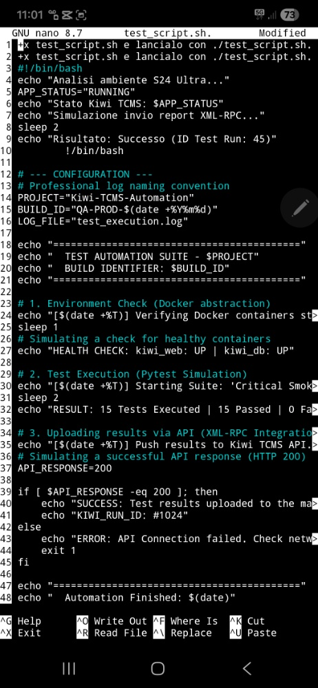
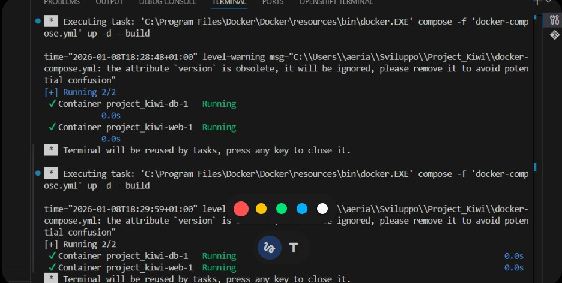

From Mobile Prototyping to Professional Docker Environment
Sviluppo iniziale della logica di test tramite Termux. Validazione della portabilità del codice Bash in ambiente mobile.

Esecuzione dello script e verifica degli output. Simulazione della reportistica verso API (Test Run ID: 45 confermato).
Deployment su Docker Compose. Orchestrazione di Kiwi TCMS e PostgreSQL per una gestione professionale dei test.
